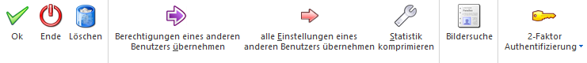
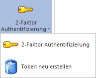
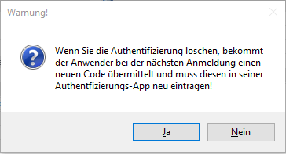

Ist die Einrichtung der 2FA abgeschlossen und der Benutzer hat sich mit individuellen Anmeldeinformationen in der 2FA-App und der WinLine mobile (entweder direkt bei der Anmeldung, oder über die Anweisungen der E-Mail) authentifiziert, dann steht in der Benutzeranlage der Administration im Ribbon der Auswahl-Button "2-Faktor-Authentifizierung" zur Verfügung.

Der Button verfügt dabei über diese zwei aufgeführten Funktionen:

Hinweis
Ist die 2FA nicht eingerichtet, bzw. der 2FA-Anmeldeschritt seitens des Benutzers ist (noch) nicht erfolgt, dann ist dieser Button zwar sichtbar, jedoch ist er ausgegraut und nicht selektierbar.
Ø 2-Faktor-Authentifizierung
Diese Auswahl ermöglicht es dem Administrator dem WinLine mobile-Benutzer seine spezifischen 2FA-Informationen erneut zukommen zu lassen.
Ø Token neu erstellen
Diese Auswahl ermöglicht es dem Administrator, die benutzerspezifischen 2FA-Informationen zurückzusetzen. Eine Warnung macht darauf aufmerksam, dass dem Anwender bei der nächsten Anmeldung ein neuer (QR-)Code übermittelt wird. Dies hat ebenso zur Folge, dass die erstmalige Authentifizierung an der 2FA-App erneuert werden muss.

Hinweis
Das Verfahren für die (Neu-)Anmeldung richtet sich nach den Einstellungen, welche in der WinLine mobile im Register "WinLine Server" vorgenommen wurden. Somit gleicht dieser Prozess der bisher dokumentierten Benutzeranmeldung mit dem 2FA-Verfahren.